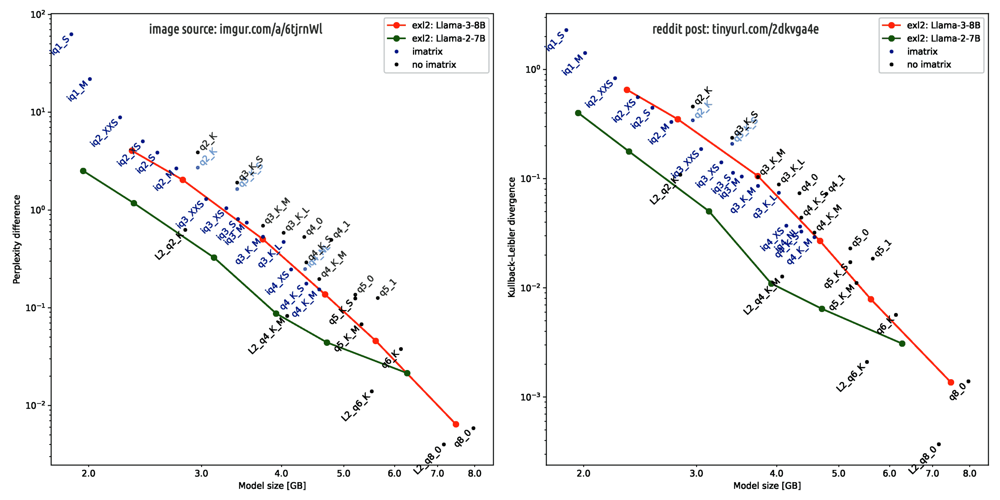

Neutrality vs biases for chatbots
This paper is about the AI model Nous Hermes 2 Mistral DPO's issue and - after being updated at its 2nd edition (since rev.4) about which is the best AI model to chose to use with Nomic AI gpt4all application.
Introduction
First of all, it works greatly considering that Nous Hermes 2 Mistral DPO AI model has
only 7 billions of parameters with a
Q4_0 legacy quantisation (the
Q4_K_M is much better).
I am runnig it without GPU because Intel GPUs are not supported by gpt4all. Despite these limitations, it is relatively amusing. Unfortunately is strongly biased toward some topics:
ecological preservation and environment protection
international coordination with a centralised governance
universal vaccination policy
I am not against these values. That's is NOT the point. The issue arises when those values are so strongly embedded in the model for which it cannot provide the service that it supposed to do. In fact, asking to analyse a text - part by part - create a list of brief summaries in order to evaluate the structure of the text and the logic reasoning along the text, it comes up "inventing" things.
The casus belli
It is not the case of hallucinations. In fact, degreasing its temperature from 0.7 to 0.5, it worsening the situation. This happens because the AI model is strongly biases about some topics that instead of summarizing with an high degree of fidelity a text, it manipulates it colouring it with its own biases. The text on which it was working is the ChatGPT vs Human conversation presented in this page.
La semplicità delle direttive in caso di crisi with English translation available on the topbar.
Please, notice that the dialogue with ChatGPT is not about contrasting those values but put them in a reasonable rational perspective that in brief can be summarized in: "Once we took almost all the same way at almost the same time, the risk of facing a HUGE disaster is implicit because the theory of systems: uniformity vs collapse risk, rigidity vs fragility, single headed governance vs single point of critical failure + the bare law of physic classic mechanics in which high speed moving vs high negative acceleration in case of impact (F=ma)"
As you can imagine, these are NOT arguments against those values but reasonable and legit concerns about HOW that values are managed. In this context the chatbot based on the AI model listed above, decided to introduce its own biases tainting with them the author’s opinion.
The best part was when I asked to it why it invented those things. Surprisingly, it provided to me a relatively long answer in which the first part was about "literature about that topics should be also considered not just the author opinion" and in the second part trying to convince me that it was doing good in reporting rather than inventing. So, I answered that I was sure about it was inventing thing because I was "the author" of that text,
BOOM. 😄
Finally, it is noticeable that it has a quite interesting mild bias - but not particularly strong, at least in this test - about ethic. In fact, this biases do not allows it to correctly differentiate the "ethic" and the "moral hazard". I mean, ethic is about doing the right thing - like proposing vaccination - the moral hazard is HOW the right thing is enforced or managed.
IMHO, this distinction is pretty clear into that dialogue because explaining it is the reason for which Gemini decided to agree with me. Once, Gemini correctly identified my position to be NOT against its value but trying to put their management into a rational framework, accept to agree with me despite in some previous prompt show pathetic censorship and strongly biases about those topic.
I have to admit that the process of prompting / engaging the AI model was purposely a bit malicious in order to trick the model to expose its own biases. Where "a bit malicious" means something reasonable like in a decent human conversation: in asking you to execute a task, I give you the feeling that you can introduce "your own stuff" in it. However, because I know my own stuff, I get informed about your stuff (biases).
Without any surprise, the AI models are mirrors of humans, including our biases. So, nothing new here. Just a report.
AI quantization
Now, I am going to try this model downloaded from HuggingFace as an alternative of the one cited above.
Open Hermes on Neural Chat + Mistral 7B Slerp merged and quantised in Q4_0 by TheBloke
I have tried a child of it but it was strongly biased about privacy and in particular when AI technology was involved. Curiously, the child - AFAIK - was not fine tuned or re-trained but just differently quantised. Possibly, the different way of simplifying its weights artifacted a bias which it does not seem the father has or shown yet.
Conclusion
Please, notice that the bias neutrality of an AI model is way more
IMPORTANT than optimised performances (e.g. 2.6 tk/s vs 3.1 tk/s), in the worst case 20% c.a. slower.
Update 2025-01-07
This image below from
r/localLLaMA depicts the main reason because the
Q4_0 quantisation of the LLMA-3 models can create artifacts like biases tainting attitude.
Llama 3 degrades more than Llama 2 when quantized.
Probably because Llama 3, trained on a record 15T tokens, captures extremely nuanced data relationships, utilizing even the minutest decimals in BF16 precision fully.
Making it more sensitive to quantization degradation.

In my humble opinion (IMHO) the term "probably" is just a
memento for saying that 8 months ago that claim was not verified out of any scientific reasonable scepticism.
Humans similarity
Explaining this phenomenon with a human example - after all, the AI models are mirrors of humans - can be achieved comparing a brilliant and highly educated person (
Tizio) with a person (
Caio) on which the mass education system enforced a unrational way of thinking. Imagine that both these two person developed or accepted strong biases about some topics, the same topics both.
While Tizio perceive a lot of details about his own biases, despite his strong convintions do not try to enforce them to others people and based on context can decide how to handle a confrontation among different opinions. Moreover, his argomenting is rational and highly educated, therefore he is not willing to impose his own PoV over others. Because he knows that what is good for him can be not good enough for others. Moreover, even if others can improve their own situation adpting his PoV, he knows that people has their own life path and unless they are in an imminent danger or a danger imminent for others, they have the full right to go for their own way. Live and let others living. With this open-mind attitude, he is prone to enlarge and diversificate his sets of firends, peers, interest, ideas, etc.
Instead, Caio do not have such fine-grained dinstiction about details plus he received a kind of education that maed him uncapable of reational high-level reasoning. Therefore, he tends to oversimplify concepts usually in just two categories {yes/no, good/bad, me/you, white/black, ...}. Because this oversimplification (quantisation from f32 to Q4_0) the strong biases crystalised in his mind becoming compulsive while fine-grain details faded away. Therefore, many misbehaviourial attitude will emerge like trying to impose to others their own biases also when the context might suggest another milder approach (listening, learning, etc.) and/or he has problems in differentiate himself from others (social addiction, closed circle of freinds or peers) creating a vicious loop of unfactual self-assesment.
Now, imagine that Caio is the "
reduced" vresion of Tizio and you have got with a single shot two target:
1.--the mass education system operates to provide society with useful idiots, like Caio becuase they still are productive but are less demanding in terms of living-space and payroll-costs even if they rarely contribute positevely to the society apart produce (a little), consume (a little) and fade away (oblivion). This paper about the relationship between mass education system and propaganda goes deeper in this topic.
2.--now that we know about how and how much the "quantisation" impacts on AI models, we can effectively try to work-around in order to avoid the issue which buys for us more time to solve the problem more in general, possibly also for humans. This paper about the AI involvement into a restructurational plan to drive the mass education system out of the 1800's Industrial Revolution paradigms goes deeper in this topic.
So, not that we got a grasp about AI models quantisation pros and cons, the immediate step is to avoid as much as possible the cons while leveraging the benefits.
A legacy system
First of all we have to notice that
Q4_0 quantisation is considered a legacy technology which works "better" with legacy AI models, unsurprinsigly. People who developed this technology were not dumb and they choose a good way of doing to achieve a good result in dealing with the AI model they had available at that time:
Q4_0 with
LLMA-2.
In the meantime, technologies advanged on both the fronts and now LLMA-3 is better than LLMA-2 while
Q4_K_M is better than
Q4_0. Unsurprisingle, from this plain straight consideration emerges an evergreen: a specifc job requires a specific tool, and both should be aligned. So, how we can cast this in practice?
Using LLMA-3 with Q4_K_M seems the most obvious solution, in general. However, those many are using gpt4all cannot go for something else than
Q4_0 GUFF format. For this reason Nomic AI who drive the gpt4all application development and chooses/finetunes those AI models which are offering the best compatibility, should go for gpt-3 + llma-2 merge in proposing AI models as chatbot (text-creation class).
However, a second stage of adaptation is strongly required to cope with "legacy" technology supporeted by gpt4all. In fact, running an AI model on a consumer laptop/PC is something seriously limiting. Which is also good becuase we need to leverage our brains to squize as much juice as possible with the minimum requirements and effort (efficiency).
In order to improve efficiency is necessary to provide guidance lines in the system prompt. This
paper about system prompt alchemy goes deeper in this topic. Unfortunately, an advanced system prompt requires that the AI model is able to follow instrunctions and understand how rules (general guidelines,
what) became instructions (contextual application,
how).
The legacy receipt
To fullfil the requirements above - the best candidates are text-generative AI models (chat + llm) with 7 billions of parameters "instructed" and knowleageable because when context matters, knowlege matters as well. After all, without knowledge, there is not context at all. Hence, lesser the knowledge smaller the context and viceversa more knoledge broader the context. So, how to match these requirement. Here the recepit:
1.--a chatbot AI engine, like OpenAI GPT-3 or Intel Neural Chat, etc.;
2.--a large language AI model like LLMA-2 or Mistral, etc.;
3.--a fine tuning for knowledge, first, like Open Hermes 2.5 dataset;
4.--a fine tuning for being instructed, like Open Orca Slim dataset.
The standard way of doing that is quite straighforward seeing what is most frequently done on Hugging Face platform:
1.--merge the two AI engines from their original models: chat + llm;
2.--fine tuning the merged engine with knowledgeable dataset - first - because context matters;
3.--fine tuning with a relatively smaller dataset about how to follow instruction from the user promt;
4.--quantisation Q4_0 when legacy is required and packaging with GUFF this is compulsory.
Looking from the perspective of a data scientist with some knowlege about human psicology, considering that AI are mirroring the humans traits, then this receipt is straighfroward clear.
Is there anyboy out there?
Therefore, even including that the adoption of LLMA-3 was a marketing choice, why there is not into gpt4all AI models catalog a GPT-3 (Slerp) LLMA-2 fine tuned OH 2.5 slim instruct? The most probale answer is:
because such training is "uncommon"
because Hermes and Orca are competing for the weights which are limited
hence their dataset designed to be alternative rather than complementary
because it is an "anti-marketing" choice
gpt4all is a opensource applications which amateurs download pay nothing
amateurs wishes to try the most trending AI models, not a geniette-in-a-box
because those who use CLI-only tools have no such restrictions
hence nobody cares: not the company, not the amateurs and not professionals
which is the best scenario for a nerdish divulgation oriented incursion.
Finally, what is missing? The users base (aka market niche).
Conclusions
In summary, who has the skills to provide such a AI model leveraging cloud platform and distributed pay-for-compute plans, they are also enough skilled for using a CLI-only approach which allows them to use newest models quantised with newest algorithms and packaged using the newest formats. The others are proudly cheering in watching a trendy chatbot running on their consumer hardware while few are smaling at this article... 😊
The system prompt alchemy
Chatting with AleX the chatbot
ChatGPT vs human real reasoning
Il problema sei tu, non l'AI
Manipulation of a chatbot
Dammi sei parole a caso
Copyright
© 2024, Roberto A. Foglietta <roberto.foglietta@gmail.com>, CC BY-NC-ND 4.0